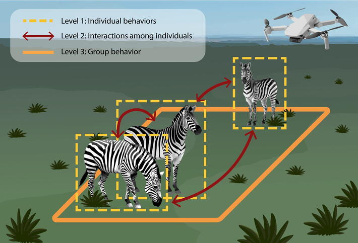

Imageomics researchers have been shortlisted for a major international ecology award for their work on new methods to study animal behavior using advanced technology.
The paper, “Studying collective animal behaviour with drones and computer vision,” led by first author Jenna Kline, has been shortlisted for the Robert May Prize, a prestigious recognition for early-career researchers in quantitative and methodological ecology.
Awarded by the British Ecological Society, the Robert May Prize honors the best paper in one of the society’s journals led by an early-career author. The award highlights innovative methodological advances that significantly expand the tools available for ecological research and support real-world environmental applications.
The shortlisted study was published in Methods in Ecology and Evolution and introduces a powerful new framework for studying collective animal behavior using drones and computer vision. The approach enables researchers to collect and analyze ecological data at unprecedented scale and resolution, expanding opportunities for more reproducible, data-rich, and AI-ready biodiversity science.
Co-authors of the study include Saadia Afridi, Edouard G. A. Rolland, Guy Maalouf, Lucie Laporte-Devylder, Christopher Stewart, Margaret Crofoot, Charles V. Stewart, Daniel I. Rubenstein, and Tanya Berger-Wolf.